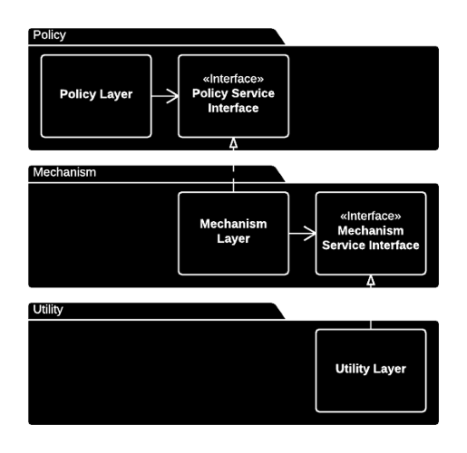
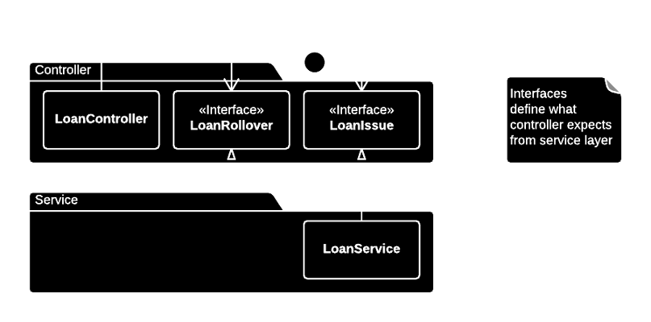
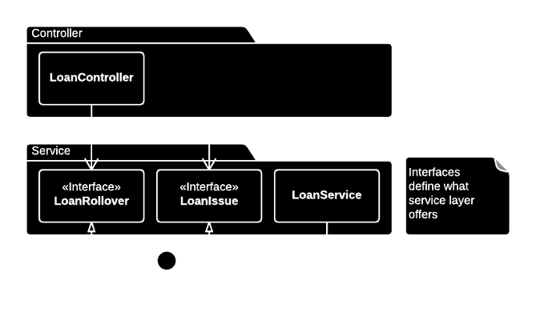

SOLID
The Dependency-Inversion Principle
a. High-level modules should not depend on low-level modules. Both should depend on abstractions.
b. Abstractions should not depend on details. Details should depend on abstractions.
Presentation by Kristjan Siimson / @ksiimson
Robert C. Martin “Agile Software Development: Principles, Patterns and Practices”

Inversion of Ownership
Clients own their interfaces.
Example
Example
Assuming LoanService is one monolithic chunk, if it is segregated with interfaces it can be split up without modifying any client code.
Counter-Example
When interfaces define what the service has to offer, changes to the service layer will have an impact to controllers.
A naïve heuristic
Depend on abstractions.
- No variable should reference a concrete class.
- No class derives from a concrete class.
- No method overrides an implemented method of any of the base classes.
Powerful, but strictly speaking, it's not possible to follow.
Benefits
- Protects from changes in details.
- Better reusability.
Resisting premature abstraction is as important as abstraction itself.